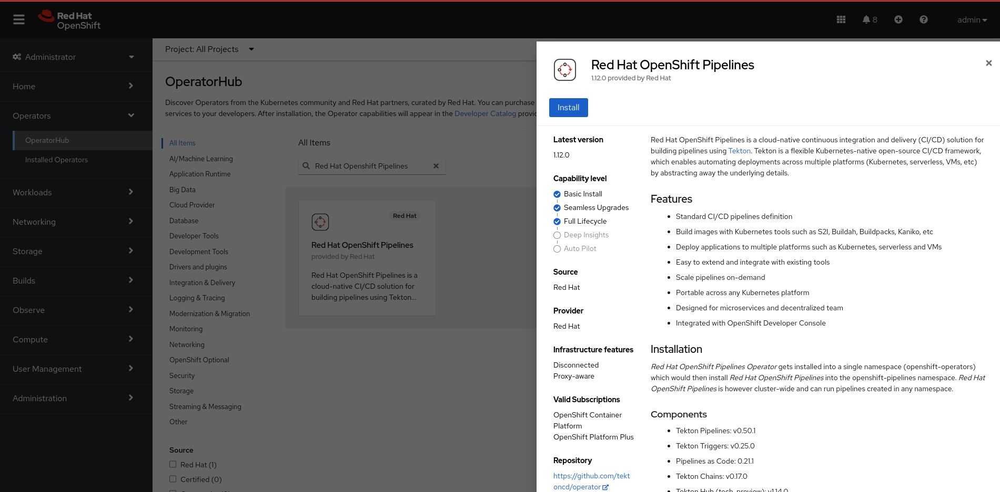
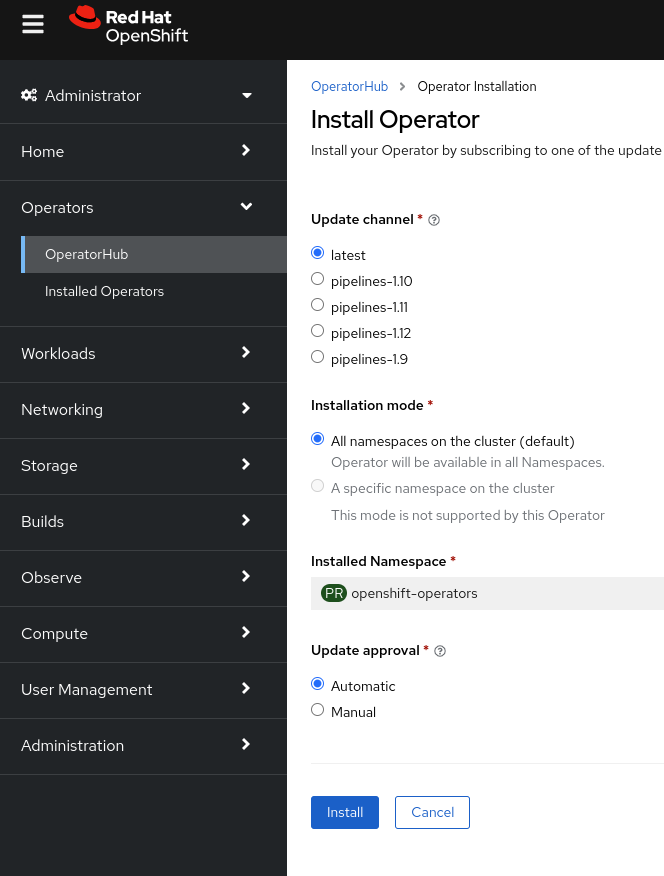
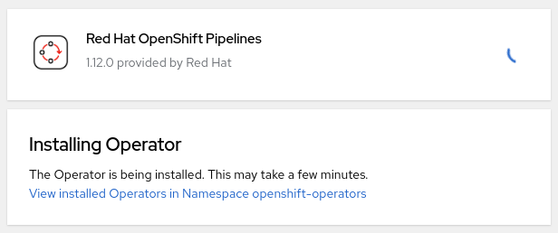
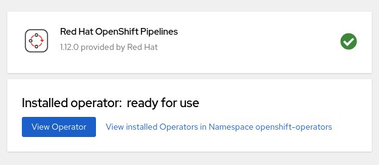
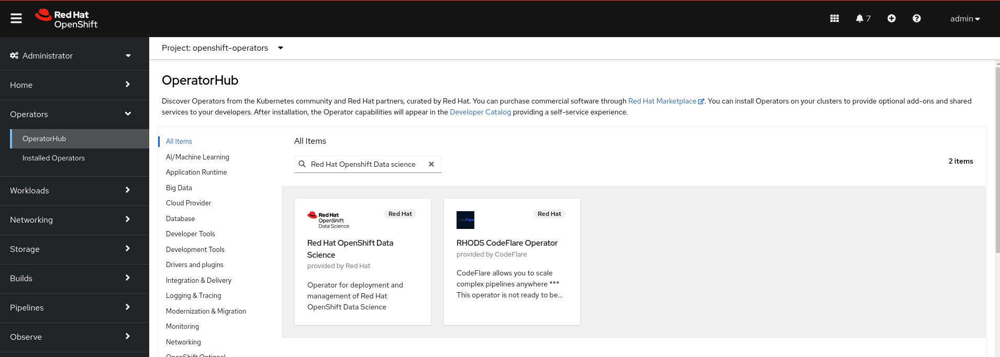
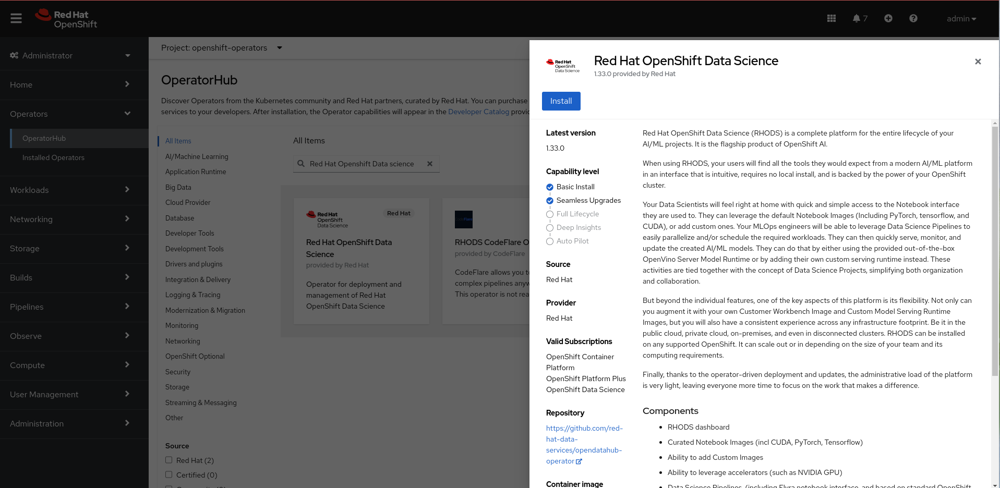
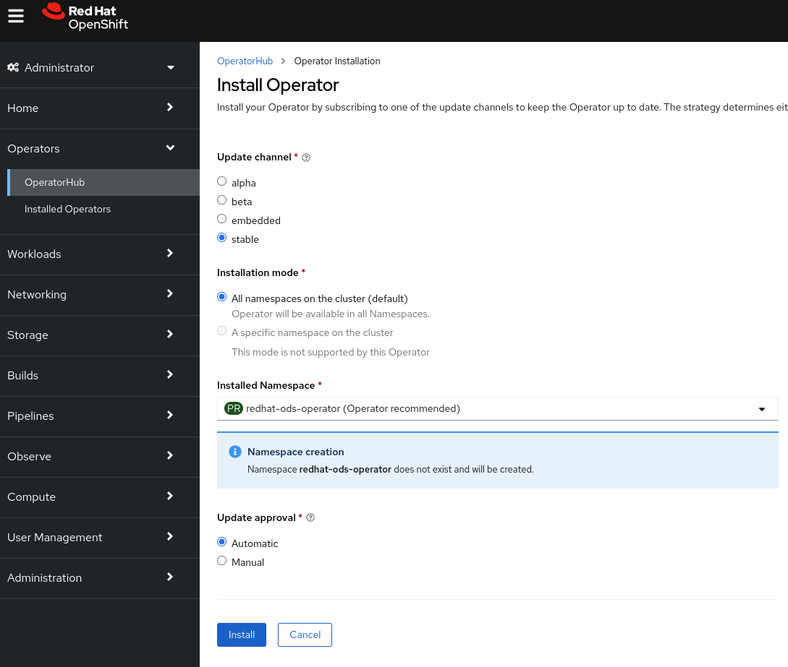
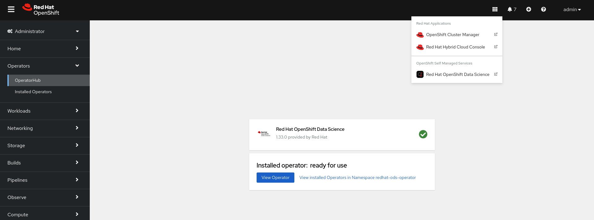
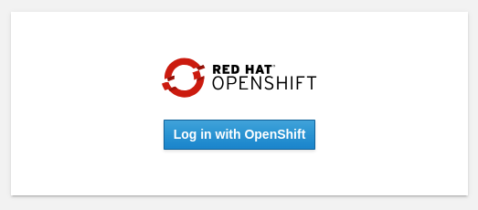

Installation using the Web Console
Red Hat Openshift Data Science is installed as an operator. As a dependecy it requires the Red Hat Openshift Pipelines operator to be installed as well.
Installation of the Red Hat Openshift Pipelines operator
-
Login to Red Hat Openshift using a user which has the cluster-admin role assigned.
-
Navigate to Operators → OperatorHub and seach for Red Hat Openshift Pipelines

-
Click on the Red Hat Openshift Pipelines operator and in the pop up window click on Install to open the operator’s installation view.
 -
In the installation view some installation parameters can be tuned. Administrator can set the Update channel parameter to a specific version and the Update approval parameter to either Automatic or Manual. The Installation mode and the Installed namespace parameters are fixed.
Click on the Install button at the bottom of to view the to proceed with the installation. A window showing the installation progress will pop up.
When the operator is installed you can view it’s details by clicking on View Operator button.

Installation of the Red Hat Openshift Data Science operator
The process of the Red Hat Openshift Data Science operator installation is very similar to the Red Hat Openshift Pipelines operator.
-
Login to Red Hat Openshift using a user which has the cluster-admin role assigned.
-
Navigate to Operators → OperatorHub and seach for Red Hat Openshift Data Science.
 -
Click on the Red Hat Openshift Data Science operator and in the pop up window click on Install to open the operator’s installation view.
 -
In the installation view window choose the Update Channel, Installed Namespace and Update approval or accept default values and click on Install the button. The Installation mode parameter is fixed.
Operator Installation progress window will pup up. The installation may take a couple of minutes.

When the operator is installed open the applications window in the right upper corner and Red Hat Openshift Data Science dashboard should be available.
When you click on the Red Hat Openshift Data Science dashboard button a login window should appear.

| It may take a while to start all the service pods hence the dashboard may not be accessible immediately. You can check the status of the pods in the project redhat-ods-applications. Navigate to Workloads → pods and select project redhat-ods-applications. All pods must be running and be ready in order the dashboard to be accessible. |